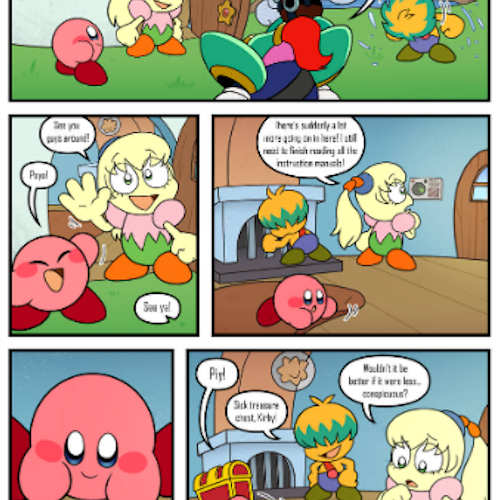
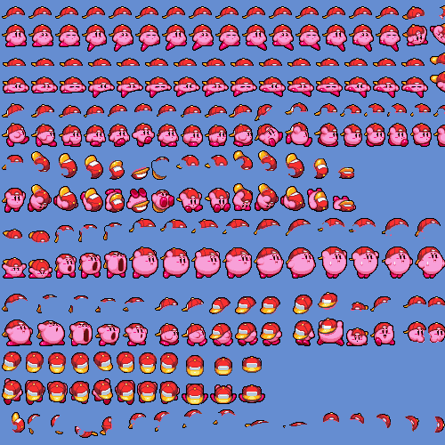
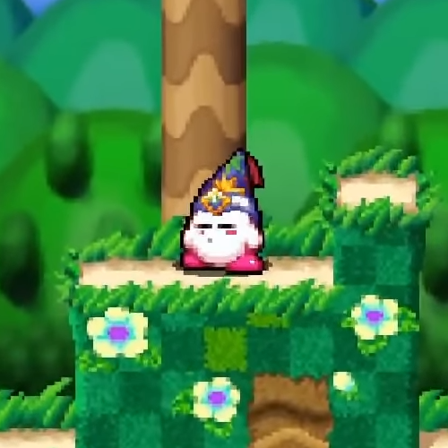
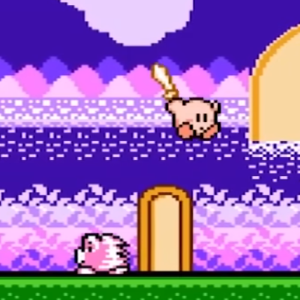

Fan Comics
Fan Comic: Kirby's Return to Right Back at Ya

Sprite Resources
Custom Kirby Sprites (The Spriters Resource)

Fan Games
Kirby Fan Games (itch.io)

Rom Hacks
Kirby's Adventure NES (ROMhacking.net)